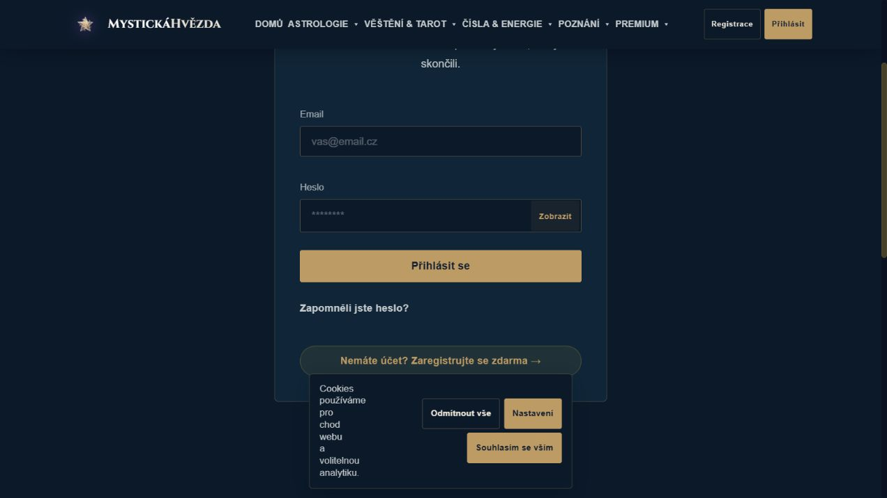
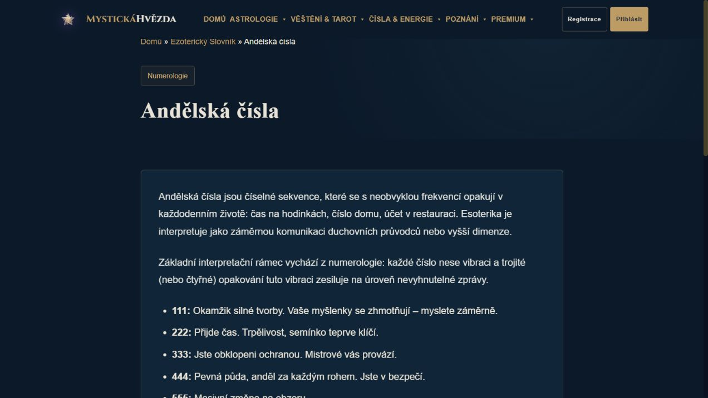

Lokální náhled · 14. října 2026 · zatím nenasazeno
Detaily, které drží vzhled pohromadě
Profilové komponenty
Modelová ukázka vzhledu. Zobrazené nuly jsou výchozí hodnoty komponent, nejde o data zákazníka. Klikací logika skutečného profilu je na stránce profilu.
0
Celkem výkladů
0
Tento měsíc
0
Oblíbené
0
Denní série
Přihlášení a heslo

Přehledná navigace

Čtecí plocha slovníku
